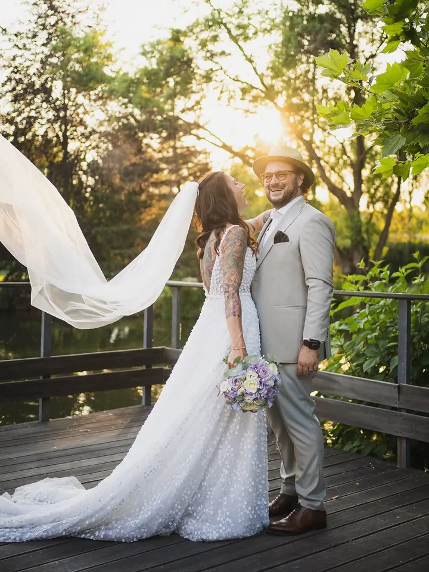
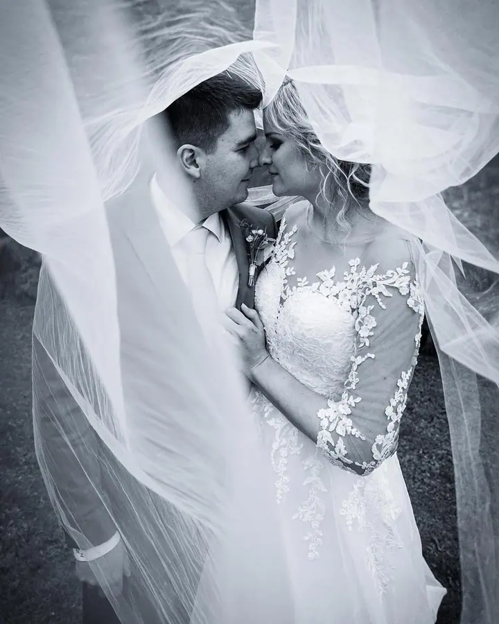
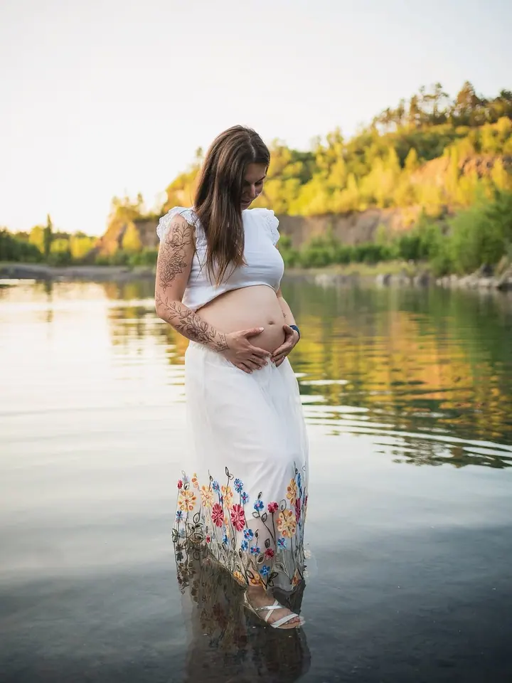
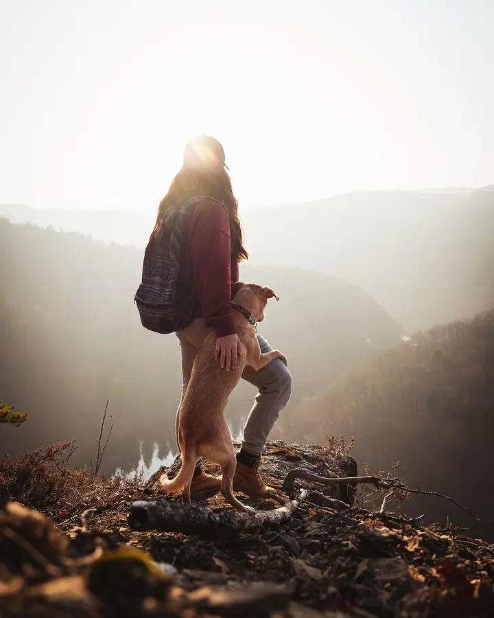
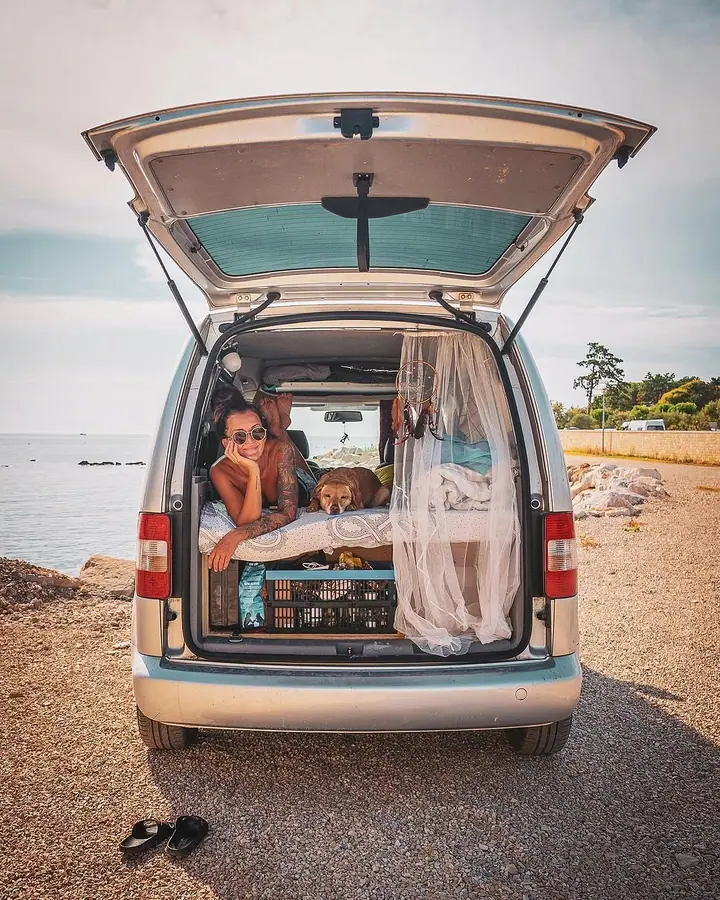
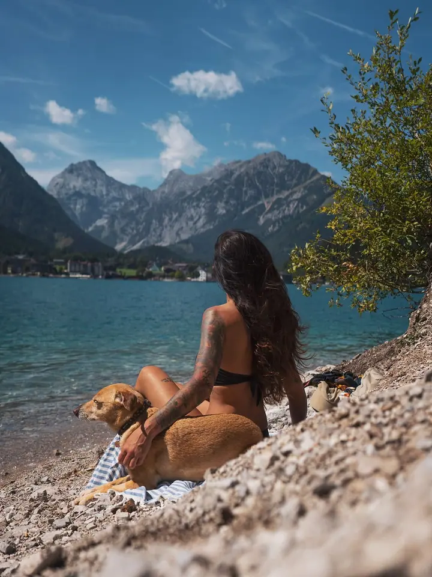
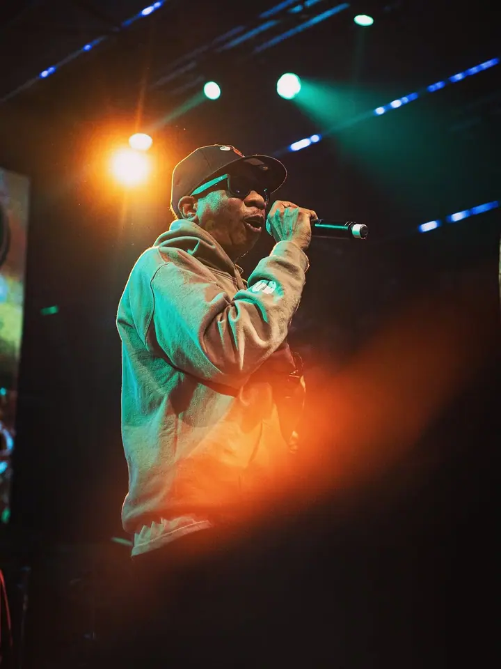
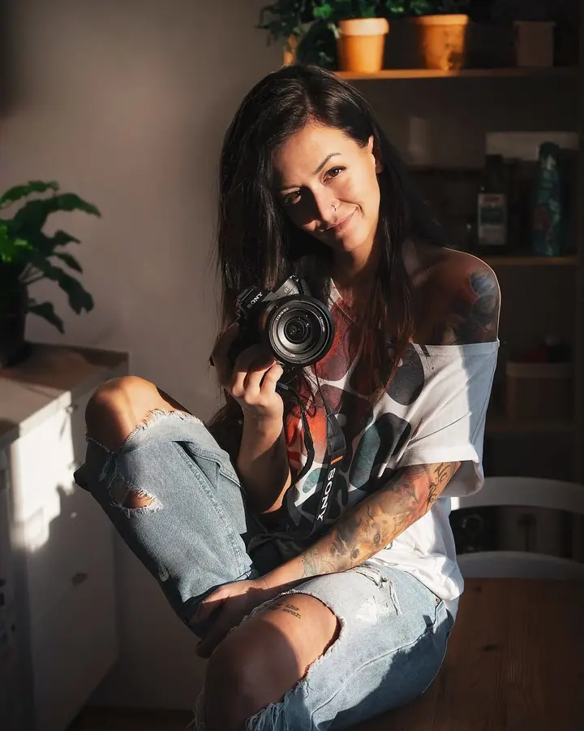
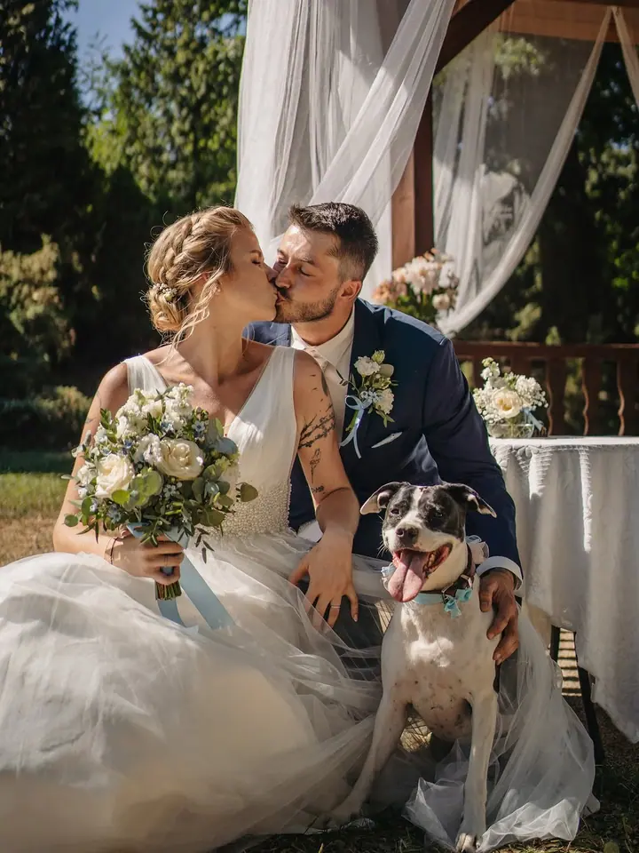

01 / 04
Svatby
Od předsvatební schůzky přes obřad a párové focení až po celý den od ranních příprav. Na svatbě si mě skoro nevšimnete, a přesto budete mít zachycené úplně všechno.
Zeptat se na termín→








Svatby, koncerty a lidé takoví, jací jsou
Zeptat se na termín →(01) Ahoj
Jmenuji se Aneta Puteani a jsem reportážní fotografka. Fotím svatby, koncerty a akce, rodiny, děti i zvířata. Nechávám se inspirovat momentem a fotím vás takové, jací doopravdy jste.
2 847lidí sleduje mou práci na Instagramu
195příspěvků s fotkami a příběhy
(02) Co fotím
01 / 04
Od předsvatební schůzky přes obřad a párové focení až po celý den od ranních příprav. Na svatbě si mě skoro nevšimnete, a přesto budete mít zachycené úplně všechno.
Zeptat se na termín→02 / 04
Fotím cinkání skleniček na firemních akcích i koncertní fanoušky v euforii. Každou akci zachytím do nejmenšího detailu, přirozeně a bez strojených póz.
Zeptat se na termín→03 / 04
Rozcuchané dětské vlásky ve větru, láskyplné doteky i váš pes. Jako učitelka ve školce vím, jak z dětí vykouzlit opravdový úsměv.
Zeptat se na termín→Dále nabízím
Když mě projekt zaujme, ráda nafotím produkt, prostor, backstage nebo lifestyle. Třeba fotky na míru pro vaše webovky.
↗(04) Postup
Od první zprávy po hotovou galerii.
Krok 1 z 4
Ozvěte se přes formulář nebo e-mail a napište, co chystáte. Svatbu, akci, rodinné focení, nebo něco úplně jiného.
Krok 2 z 4
U svatby se potkáme na předsvatební schůzce online nebo osobně. U ostatních focení spolu vymyslíme místo i nápad.
Krok 3 z 4
Fotím nenápadně a bez strojených póz. Vy si užíváte svůj den a já vaše chvíle tiše sbírám.
Krok 4 z 4
Fotky pečlivě upravím a pošlu vám je v elektronické podobě, ať vaše vzpomínky časem nevyblednou.
Vy prožíváte důležité chvíle, já je pro vás tiše sbírám.
(05) Za objektivem
Jako malá jsem kradla tátovi foťák a fotila bráchu v pokoji, svoje morčata i našeho psa. Když nebylo co fotit, naaranžovala jsem hračky a vymýšlela si k nim příběhy. Pak jsem dostala svůj první foťák (díky, táto) a už jsem ho nepustila. Na střední jsem mezi skákáním pod pódiem dokumentovala koncerty kamarádských kapel. A tak nějak to začalo.
Vyrostla ze mě reportážní fotografka. Jsem ale taky učitelka ve školce a velký milovník zvířat, takže vytváření srandiček s dětmi, aby byly na fotkách pořádné úsměvy, mám dokonce i vystudované. Často se mnou jezdí i moje fenka Jenny, kterou děti i dospěláci milují. A ona miluje svůj míček.
Živit se focením nebyl můj sen, prostě se mi to stalo. Dnes mi to dává smysl, směr a nadšení jako nic jiného. Trávit s vámi čas na svatbách a akcích, poznávat vaše rodiny, děti a zvířata, to je to, pro co dýchám. A ještě se u toho skvěle pobavíme.
Aneta
Aneta Puteani · Reportážní fotografka svateb, akcí a lidí
Mám tři balíčky: 2 hodiny focení s cca 100 fotkami za 8 000 Kč, 5 hodin s cca 200 fotkami za 12 000 Kč a celý den (12 hodin) s cca 400 fotkami za 20 000 Kč.
Platíte podle počtu upravených fotek: 5 fotek za 2 500 Kč, 10 za 4 800 Kč, 15 za 6 000 Kč a 20 za 7 600 Kč. Minimum je 5 fotek, vyšší počty po domluvě.
Při celodenním svatebním focení (Balíček 3) je doprava v ceně. V ostatních případech účtuji 10 Kč/km.
To je úplně v pořádku. Nepotřebujete umět pózovat, fotím vás přirozeně a při focení se hlavně nasmějeme. Nervozita obvykle opadne velmi rychle.
Eventy fotím od 2 500 Kč za hodinu. Finální cena závisí na náročnosti, lokaci, typu akce a na tom, jak budete fotky používat.
(07) Kontakt
Napište pár vět o tom, co si představujete, a termín, který se vám hodí.
aneta.puteani@seznam.cz